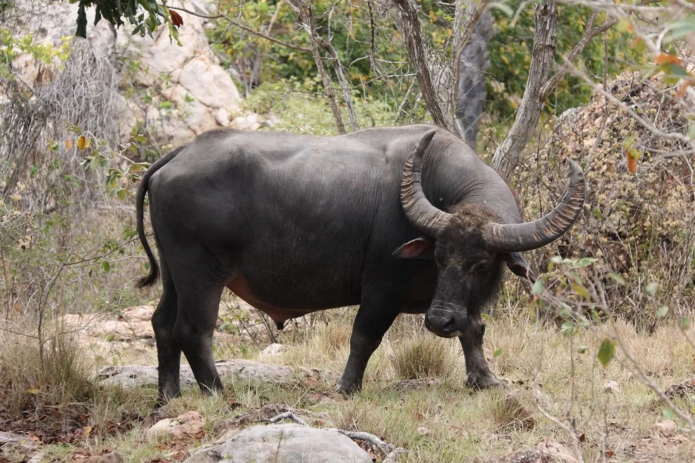

FUN FACTS ABOUT VIETNAM
There’s a lot more to explore beyond Vietnam’s beautiful cities, delicious foods, and colorful fruits! On this page you’ll find some fun facts and other interesting information about the country!
NATIONAL FLOWER: LOTUS
The lotus flower is considered Vietnam’s national flower, and symbolizes purity, elegance, and strength.

NATIONAL ANIMAL: WATER BUFFALO
Vietnam’s national animal is the water buffalo, a powerful symbol of strength, happiness, and prosperity.

TRADITIONAL CLOTHING
Vietnam’s national dress is called “Áo Dài”. The clothing has evolved alongside Vietnam for hundreds of years, and is worn for many occasions: photo shoots, Tết (Lunar New Year), weddings, etc.
TẾT (LUNAR NEW YEAR)
Tết is Vietnamese Lunar New Year! This festival occurs in late January or early February, and is the most significant holiday because it is the day for reunion, hope, and luck! It’s a day filled with celebration, food, and gifts!
Fun Fact: Elders gift the younger ones with red envelopes filled with “lucky money”!